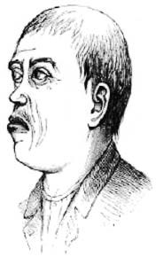
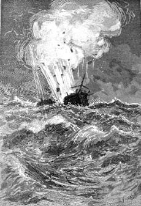

30-31 Mart ve 1 Nisan 1897 güncelerinden
Simonini ve meraklı rahibin karşılıklı atışma şeklinde ilerleyen yazışmalarını kaydetmek Anlatıcı'yı biraz huzursuz ediyor ama anlaşıldığı üzere 30 Mart günü Simonini Sicilya'da yaşananları bütünüyle dile getiremeden yazısını tamamlıyor; metinde pek çok satırın silindiği görülüyor; bazıları bir X işaretiyle iptal edilmiş olsa da hâlâ okunabiliyor ama bütününde tedirgin edici bir hava var. 31 Mart'ta günceye Rahip Dalla Piccola dahil oluyor ve Simonini'nin belleğinin sımsıkı kapalı kapılarını aralarcasına onun umutsuzca hatırlamayı reddettiği bilgileri ifşa ediyor. Ve 1 Nisan günü Simonini kusmaya çalıştığını hatırladığı huzursuz bir gecenin sabahında öfkeyle kalemi eline alıyor ve rahibin abartılı ve ahlaken küçümsediği notlarını düzeltircesine metne yeniden müdahalede bulunuyor. Anlatıcı nihai olarak kime hak vereceğini bilemediğinden bu olayları oluşum süreçleri içinde anlatmayı yeğliyor ve elbette kendi oluşturduğu metnin sorumluluğunu üstleniyor.
Simonini, Torino'ya gelir gelmez raporunu Cavalier Bianco'ya iletmiş ve bir gün sonra kendisine gönderilen mesajla akşam saatlerinde bir arabanın onu alacağı ve ilk sefer olduğu gibi Bianco, Riccardi ve Negri di Saint Front'un onu bekleyeceği yere götürüleceği bilgisini almıştı.
"Avukat Simonini" diye söze girmişti Bianco, "artık aramızda kurulmuş olan yakınlığa güvenerek, izninizle duygularımı gizlemeyeceğim ve size ahmağın teki olduğunuzu söyleyeceğim."
"Cavaliere, nasıl söylersiniz bunu?"
"Söyler, söyler tabii" diyerek araya giren Riccardi hepsinin bu şekilde düşündüğünü bildirmişti. "Ben de tehlikeli bir ahmak olduğunuzu düşünüyorum ve zihninizde oluşan bu düşüncelerle Torino'da serbestçe dolaşmanızın tekinsiz bir hareket olup olmadığına karar veremiyorum."
"Özür dilerim, bazı şeylerde yanılmış olabilirim ama anlamıyorum..."
"Yanıldınız, her şeyde yanıldınız... Farkında mısınız bilmem ama (bunu artık ev kadınları bile biliyor) General Cialdini birkaç gün içinde birliklerimizle kiliseye ait devletlere girecek. Olasılıkla bir ay içinde ordumuz Napoli kapılarına dayanacak. O noktada zaten bir halk oylamasını gündeme getireceğiz ve İki Sicilya Krallığı toprakları resmen İtalya Krallığı'na bağlanacak. Eğer Garibaldi göründüğü gibi soylu ve gerçekçi bir önderse Mazzini denen ateşli adama kendini kabul ettirecek ve bon gré mal gré durumu kabul edecek, fethedilmiş toprakları yeniden kralın eline teslim edecek ve bizim gözümüzde şahane bir yurtsever kimliği kazanacaktır. İşte o zaman altmış bin kişiye ulaşan ve dizginleri serbest bırakılmaması gereken Garibaldi ordusunu dağıtmak zorunda kalacağız; gönüllüleri Savoia ordusuna alacağız, ötekiler de tazminatlarını alıp evlerine dönecekler. Hepsi başarılı çocuklar, hepsi birer kahraman. Ve siz bu talihsiz raporunuzu basına ve kamuoyuna sunarak, yakında bizim askerimiz ve subaylarımız olacak olan Garibaldi yanlılarının Sicilya'yı yağmalayan –çoğu yabancı– bir çapulcu çetesi olduğunu söylememizi mi istiyorsunuz? Garibaldi bütün İtalya'nın minnet duyacağı gerçek bir kahraman değil de palavradan bir düşmanı satın alarak yenmiş olan bir maceraperest mi? Ve sözde son ana dek İtalya'yı bir cumhuriyet yapmak için Mazzini ile komplo hazırlayan biri mi? Nino Bixio liberallere ateş ederek, çobanlarla köylüleri katlederek mi adada dolaştı yani? Deli misiniz siz?"
"Ama sizler bana verdiğiniz görevle..."
"Biz size Garibaldi'yi ve onunla savaşan yiğit İtalyanları lekeleme görevi vermedik ki; bir Piemonte müdahalesini haklı kılmak için, kahramanımızın Cumhuriyetçi entourage'ının işgal edilen toprakları nasıl kötü yönettiğini gösteren belgeler bulmanızı bekliyorduk."
"Ama efendim, sizler biliyorsunuz ki La Farina..."
"La Farina Kont Cavour'a özel mektuplar yazıyordu ve bunları elbette etrafa yaymadı. Hem sonra La Farina La Farina'dır; özellikle Crispi'ye karşı özel bir hınç besler. Hem sonra bu İngiliz masonlarının dağıttığı altınlar konusundaki saçmalamalarınız ne anlama geliyor?"
"Herkes bundan söz ediyor."
"Herkes mi? Biz etmiyoruz. Hem sonra bu masonlar da neyin nesi? Siz mason musunuz?"
"Ben değilim ama..."
"O halde sizi ilgilendirmeyen konulara burnunuzu sokmayın. Bırakın masonlar ne halleri varsa görsünler."
Simonini olasılıkla Savoia hükümetinde (belki Cavour dışında) herkesin mason olduğunu anlamamıştı; oysa çocukluğundan beri etrafını saran Cizvitler yüzünden öğrenmiş olması gerekirdi. Ama Riccardi şimdi konuyu Yahudilere getirmişti ve hangi zihinsel deformasyon yüzünden onları rapora dahil ettiğini sorguluyordu.
Simonini kekelemeye başlamıştı: "Yahudiler dört bir yandalar, inanmayacaksınız ama..."
"Bizim inanıp inanmadığımızın bir önemi yok" diye sözünü kesmişti Saint Front, "Birleşik İtalya'da Yahudi cemaatlerinin de desteğine gereksinme duyacağız, öte yandan iyi İtalyan Katoliklere, gerçek Garibaldi kahramanları arasında Yahudilerin de olduğunu hatırlatmaya gerek yok. Sözün kısası, bütün gaffe'larınız yüzünden sizi Alp Dağları'ndaki konforlu kalelerimizden birine yollasak ve birkaç on yıl temiz hava almanızı sağlasak yeridir. Ama ne yazık ki gene size ihtiyacımız var. Anlaşıldığı üzere, yüzbaşı ya da albay, her neyse bu Nievo bütün kayıt defterleriyle hâlâ güneyde bulunuyor: In primis bu defterleri dürüstçe mi tuttu ve in secundis hesaplarının açığa vurulması siyasi olarak yararlı mı değil mi, bilmiyoruz. Siz, Nievo'nun bu kayıt defterlerini bize teslim etmeye niyet ettiğini söylüyorsunuz ve bu iyi olur ama bize iletmeden önce onları başkasına gösterirse bu kötü olur. Şimdi siz gene milletvekili Boggio'nun muhabiri olarak Sicilya'ya dönün ve sülük gibi yapışın Nievo'ya; ne yapın edin ve bu kayıt defterlerinin ortadan yok olmasını sağlayın, buharlaşıp uçsunlar havaya ve bir daha kimse onların adını sanını duymasın. Bunun nasıl gerçekleştirileceği size kalmış, yasallık sınırları içinde her türlü yola başvurabilirsiniz; bu arada bizden gelecek ikinci bir buyruğu bekleyin. Cavalier Bianco gerekli parayı elde edebilmeniz için Banco di Sicilia'da bir hesap açacak."
Burada, Dalla Piccola'nın açıkladıkları da eksik ve kopuk; sanki o da karşısındaki oyuncunun unutmaya çalıştığı şeyleri hatırlamakta zorlanır gibi.
Anlaşıldığı üzere Simonini eylül sonunda Sicilya'ya döndü ve bir sonraki yılın mart sonuna kadar orada kaldı; Nievo'nun defterlerine el koymak için daimi olarak uğraş verdi ama başarısız oldu; on beş günde bir Cavalier Bianco'dan hangi noktada olduğunu soran bir mektup aldı.
Fesat söylentiler yüzünden hem bedeniyle hem ruhuyla kendini defterlerine adayan Nievo kaydettiği her şeyden emin olabilmek için eline geçen binlerce faturayı daha da dikkatle araştırıyor, kontrol ediyor, inceliyordu, çünkü Garibaldi bir skandalın, iftiranın ortaya çıkmasından kaygılanıyordu; bu nedenle Nievo'ya güzel bir büro tahsis etmiş, yanına dört yardımcı vermiş, kapıya ve merdivenlere iki bekçi dikmişti; öyle ki değil gündüz, gece bile içeriye sızmak, defterleri aramak olanaksız bir hal almıştı.
Nievo da hesap dökümünün birilerinin hoşuna gitmeyeceğini anladığını belli ediyordu; defterlerin çalınması ya da kurcalanması olasılığına karşı onları en bulunmayacak yerlere gizliyordu. Simonini şairle dostluğunu güçlendirmekten başka çare bulamamıştı; zaten artık bir yoldaş muhabbetine girmişlerdi, Simonini bu lanet olası defterlerin önemini anlamaya çalışıyordu.
Denizden esen rüzgârlar başlamadan, renkleri solgun güz Palermosu'nda pek çok akşamı birlikte geçirir olmuşlardı; anasondan yapılan içkinin suya katıldığında bir duman bulutuna dönüşmesini seyrediyor, sonra bunu yavaş yavaş yudumluyorlardı. Ya Simonini'den hoşlandığından ya da artık bu kente tutsak olduğunu hissettiğinden biriyle karşılıklı hayaller kurmak gereksinmesinde olan Nievo yavaş yavaş askeri tutumundan sıyrılıyor ve içini döküyordu. Milano'da bıraktığı bir sevdayı anlatıyordu; bu imkânsız bir sevdaydı, çünkü kadın sadece kuzeni değil aynı zamanda en yakın dostu olan kişinin karısıydı. Ama elden gelen bir şey yoktu, çünkü öteki sevdalar da onu hastalık hastası yapmışlardı.
"Böyleyim ve böyle olmaya mahkûmum. Hep hayalperest, karanlık, kasvetli, hırçın olacağım. Artık otuz yaşındayım, sevmediğim bir dünyadan kopabilmek için şimdiye dek hep savaşlara girdim. Bu nedenle henüz müsvedde halinde olan romanımı evimde bıraktım. Onun basıldığını görebilmek isterim ama tutmam gereken bu pis hesaplar yüzünden onunla ilgilenemiyorum. Hırslı olsaydım, hazlara düşkün olsaydım... En azından kötü yürekli olsaydım... En azından Bixio gibi. Yok işte. Hâlâ çocuk ruhluyum, sadece günü yaşıyorum, kımıldamak için hareket etmeyi, soluk almak için havayı seviyorum. Ölmek için öleceğim... Ve her şey bitecek."
Simonini onu avutmaya uğraşmıyordu. İyileşmesinin olanaksız olduğunu düşünüyordu.
Ekim başında Volturno Muharebesi oldu ve Garibaldi Bourbon ordusunun son saldırısını da püskürttü. Ama aynı günlerde General Cialdini Papalık ordusunu Castelfidardo'da yenmiş ve daha önce Bourbon Krallığı olan Abruzzo ile Molise'yi işgal etmişti. Nievo, Palermo'da frene basıyordu. Piemonte'de onu suçlayanlar arasında La Farina yanlılarının olduğunu öğrenmişti ve bu da La Farina'nın artık kırmızı gömlek kokan her şeye zehir kustuğunun işaretiydi.
"İçimden her şeyi terk edip gitmek geliyor" diyordu mutsuz Nievo, "ama bunlar tam da dümenin bırakılmaması gereken günler."
26 Ekim günü büyük olay gerçekleşti. Garibaldi, Teano'da Vittorio Emanuele ile buluştu. İtalya'nın güneyini uygulamada ona teslim etmişti. Onu en azından krallığın senatörü olarak atayacak, diyordu Nievo; oysa kasım başında Garibaldi on dört bin adamını ve üç yüz atını Caserta'ya dizmiş ve kralın onların önünde tören geçidi yapmasını beklemişti ama kral görünmemişti bile.
7 Kasım günü Kral zaferle Napoli'ye giriyordu ve Garibaldi, modern bir Cincinnato gibi Caprera adasına çekiliyordu. "Ne adam" diyordu Nievo ve ağlıyordu bütün şairler gibi (bu durum Simonini'yi sinir ediyordu).
Birkaç gün sonra Garibaldi ordusu çözülüyordu, yirmi bin gönüllü Savoia ordusuna alınıyordu ama üç bin Bourbon subayı da onlara katılıyordu.
"Doğru olabilir" diyordu Nievo, "nihayet onlar da İtalyan ama bu bizim destanımız için üzücü bir son. Ben dahil olmuyorum, altı aylık paramı alıyorum ve elveda. Görevimi bitirmek için altı ay yeter diye düşünüyorum, umarım başarırım."
Lanetli bir iş olmalıydı, çünkü kasım sonunda ancak temmuzun hesaplarını tamamlayabilmişti. Tahminen üç ay, belki biraz daha fazlası gerekliydi.
Aralık ayında Vittorio Emanuele Palermo'ya geldiğinde Nievo, Simonini'ye şöyle diyordu: "Güneyde kalan son kırmızı gömlekli benim ve bir vahşiye bakar gibi bakıyorlar bana. Üstelik La Farina yanlısı hayvanların iftiralarına yanıt vermek zorundayım. Tanrım, böyle biteceğini bilseydim, Cenova'dan bu hapishaneye gelmek için gemiye bineceğime denize atlar boğulurdum, daha iyiydi."
Simonini o zamana kadar kayıt defterlerine el sürme fırsatı bulamamıştı. Nievo aralık ortasında ansızın kısa süreliğine Milano'ya gideceğini söylemişti. Defterleri Palermo'da bırakıp mı gidecekti? Yanında mı götürecekti? Bilmeye olanak yoktu.
Nievo neredeyse iki ay dönmemişti ve Simonini bu hüzünlü dönemi (duygusal bir insan değilim diye düşünüyordu ama kar olmayan ve hintinciri dolu bir çölde Noel geçirmek çok anlamsızdı) Palermo çevresini ziyaret ederek geçirmişti. Bir dişi katır satın almış, Peder Bergamaschi'nin cüppesini üzerine geçirmiş, köy köy dolaşmıştı; bir yandan rahiplerden ve köylülerden dedikodu topluyordu ama asıl amacı Sicilya mutfağının sırlarını keşfetmekti.
Köylerin dışında yer alan tenha lokantalarda son derece yabani ve ucuz (ama müthiş leziz) yemekler buluyordu; bunlardan biri pişmiş suydu: Ekmek dilimleri büyük çorba kâsesine konuyor, üzerlerine bol bol zeytinyağı ve taze çekilmiş karabiber dökülüyordu; ayrıca üç çeyrek litre tuzlu suda dilimlenmiş soğan, domates dilimleri ve nane kaynatılıyordu; yirmi dakika sonra bu su ekmeğin üzerine dökülüyor, birkaç dakika bekletildikten sonra sıcak sıcak ikram ediliyordu.
Simonini Bagheria kapılarında karanlık dehlizi andıran, birkaç masalık bir lokanta keşfetmişti; bu keyifli loşlukta kış aylarında bile görünürde (ve belki gerçekte de) son derece pis olan lokantada yürek dolması, domuz jölesi, uykuluk ve her türlü işkembe yemeği gibi inanılmaz sakatat yemekleri pişiyordu.
Orada birbirlerinden çok farklı iki kişiyle tanışmıştı ve dehası bu ikisini tek bir planın içinde bir araya getirebilmeyi ancak daha sonra başarabilmişti. Ama fazla hızlı gitmeyelim.
İlki zavallı bir deliye benziyordu. Lokantacı acıdığı için ona yemek ve barınak verdiğini söylüyorduysa da aslında pek çok ve pek yararlı hizmetlerde bulunabilecek bir tipti. Ona herkes Bronte diyordu ve gerçekten de Bronte katliamlarından kurtulmuş gibi bir hali vardı. Ayaklanma anıları onu sürekli huzursuz ediyordu ve birkaç kadeh şaraptan sonra yumruğunu masaya vurup şöyle haykırıyordu: "Cappelli guaddativi, l'ura du giudizziu s'avvicina, populu non mancari all'appellu". Bu sözlerin anlamı şuydu: "Ağalar, dikkatli olun, çünkü yargı günü yaklaşıyor, halkım, çağrıyı kaçırmayın!" Bu sonradan Bixio tarafından kurşuna dizilen beş kişiden biri olan arkadaşı Nunzio Ciraldo Fraiunco'nun ayaklanmadan önce haykırdığı cümleydi.

Ona herkes Bronte diyordu ve gerçekten de Bronte katliamlarından kurtulmuş gibi bir hali vardı.
Entelektüel hayatı pek yoğun sayılmazdı ama en azından bir fikri vardı ve sabit bir fikirdi: Nino Bixio'yu öldürmek istiyordu.
Simonini'nin gözünde Bronte sıkıcı kış akşamlarını geçirmek için ilginç bir tipten başka bir şey değildi. Bir başka tipi görür görmez daha ilginç bulmuştu; bu kıllı ve başlangıçta huysuz adamın aşçıya yemeklerin tariflerini sorduğunu görünce kendini Simonini adında bir sofra düşkünü olarak tanıtarak dostluk kurmaya çalışmıştı. Piemonte usulü kuzu tarifini verince huysuz tip ona Sicilya usulü kaparili patlıcanın sırlarını veriyordu; Simonini iştahını kabartmak için Alba usulü çiğ etten söz ediyor, güneyli ise badem ezmesinin simyasına dalıyordu.
Ninuzzo adındaki bu usta bayağı İtalyanca konuşuyordu; yabancı ülkelere seyahatler yaptığı da anlaşılıyordu. Çevredeki tapınaklarda bulunan Meryem Ana heykellerine tapınan bu şahıs Simonini'nin dinsel kisvesine duyduğu saygıdan ötürü ona ilginç durumunu itiraf etmişti: Bourbon ordusunda cephaneciydi ama askeri bir konumu yoktu; çok uzakta olmayan bir cephaneliğin işletmecisi ve bekçisi olarak çalışan bir zanaatkârdı. Garibaldi yanlıları Bourbon askerlerini kovmuşlar ve cephaneye ve mühimmata el koymuşlardı; kaleyi bütünüyle terk etmemek için Ninuzzo'yu mekânın bekçisi olarak görevlendirmişlerdi ve askeriyeden maaş bağlamışlardı. Ve o orada, emir bekleyerek, canı sıkılarak duruyordu; Kuzeyi işgal edenlere kin besliyordu, kralını özlüyordu, ayaklanma ve isyan hayalleri kuruyordu.
Onun da Piemontelilerden yana olmadığını sezdiği bir sefer "İstesem Palermo'nun yarısını havaya uçurabilirim" diye fısıldamıştı Simonini'ye. Ve onun şaşkınlığı karşısında deposunu gasp edenlerin farkına varmadıkları bir gerçeği açıklamıştı: Cephaneliğin altındaki bodrumda küçük fıçılar fişek tozuyla, el bombasıyla ve başka savaş araçlarıyla doluydu. Pek yakında gerçekleşecek ayaklanma için de saklanıyordu bunlar, çünkü direniş çeteleri Piemonteli işgalcilere dünyayı dar etmek amacıyla dağlarda hazırlanmaktaydılar.
Patlayıcılardan söz ettikçe yüzü aydınlanıyor ve yassı profili, çukur gözleri neredeyse güzelleşiyordu. Sonunda bir gün Simonini'yi kendi kalesine götürmüştü ve gizli bodrumda keşif yaptıktan sonra ona elinin ayasında duran siyahımsı taneleri gösteriyordu.
"Ah, saygıdeğer peder" diyordu, "iyi kalite bir baruttan güzel bir şey yoktur. Rengine bir bakın, kurşuni gri, barutlar parmaklarımın baskısıyla dağılmıyorlar. Bunu bir kâğıt üzerine koysanız ve kibriti çaksanız, kâğıda değmeden yanar inanın. Bunu eskiden yetmiş ölçü güherçile, on iki ölçü kömür ve on iki ölçü kükürtle yaparlardı, sonra bizim İngiliz ölçüsü dediğimiz şeye geçtiler ve on beş ölçü kömür, on ölçü kükürt koymaya başladılar: işte savaşlar da böyle kaybedildi, çünkü barutlar patlamadılar. Bugün meslekten olan bizler (ama ne yazık ki ya da Tanrı'ya şükürler olsun ki pek azız) güherçile yerine Şili güherçilesi kullanıyoruz ve bu da bambaşka bir şey."
"Daha mı iyi?"
"Daha iyi. Bakın peder, her gün yeni bir patlayıcı yapıyorlar ve hepsi birbirinden beter oluyor. Kralın bir subayı vardı (yasal kralın yani) ve çokbilmiş havalarıyla dolaşarak bana yepyeni buluşunu övüyordu; bu pirogliserin idi. Ama bunun basınçla patladığını bilmiyordu; bir çekiçle baruta vuran kişi, ilk olarak havaya uçan kişi olacaktı. Bana kulak verin, eğer bir başkasını havaya uçurmak istiyorsanız, eski baruttan iyisi yoktur. İşte o gerçek bir gösteridir."
Ninuzzo Usta sanki dünyada daha güzel bir şey yokmuş gibi iyice keyiflenmişti. Simonini o anda onun bu anlatımlarına fazla önem vermemişti ama daha sonra, ocak ayında konuyu ciddiye alacaktı.
Askeri harekâtın finansal defterlerine el koymak için birkaç yöntem üzerinde kafa yoran Simonini sonunda şuna karar vermişti: Hesaplar ya burada, Palermo'da bulunuyorlar ya da Nievo Kuzey'den döndüğünde yeniden burada olacaklar. Nievo nihayetinde bunları Torino'ya gemiyle götürecek. Ana fikir olarak şimdi gün be gün onu izlemeye gerek yok, çünkü zaten gizli kasaya ulaşamıyorum ve onu açmama olanak yok. Zaten gidip açabilsem bir rezalet kopar. Nievo defterlerin kaybolduğu ihbarında bulunur, belki de benim Torinolu işverenlerim suçlanırlar. Nievo'ya elinde defterler varken suçüstü yapsam ve sırtına bir hançer saplasam vaveyla kopar. Nievo gibi bir ceset ne olursa olsun utanç yaratır. Torino'dakiler bana defterlerin havaya uçması gerekiyor demişlerdi. Ama onlarla birlikte Nievo da havaya uçmalı ki (bu da doğal ve kaza sonucu görünmeli) defterler ikinci planda kalsın. Acaba denetim binasını ateşe mi vermeli ya da havaya mı uçurmalı? Fazla göze batar. Geriye kalan tek çözüm, Nievo'yu, defterleri, onun yanında olan her şeyi Palermo'dan Torino'ya deniz yoluyla giderken yok etmek. Bir deniz trajedisinde elli ya da altmış kişi suyun altını boylarsa kimse bütün bu felaketin üç beş müsveddeyi yok etmek uğruna yaratıldığını aklına bile getirmez. Bu biraz hayali, biraz tehlikeli bir düşünceydi ama görünene göre Simonini yaş ve bilgi olarak büyümekteydi; artık üç arkadaşıyla küçük oyunlar peşinde koşan üniversitedeki genç adamdan farklıydı. Savaşı görmüş, ölüme –neyse ki başkalarının ölümlerine– alışmıştı; Negri di Saint Front'un söz ettiği kalelere müthiş bir merak beslemeye başlamıştı.
Simonini doğal olarak bu proje üzerinde uzun uzadıya kafa yormak zorunda kaldı, çünkü tek çaresi buydu. Bu nedenle ağız sulandırıcı yemekler ikram ettiği Ninuzzo Usta'dan görüşler alıyordu.
"Ninuzzo Usta, siz neden burada bulunduğumu merak ediyor olmalısınız; Papa Hazretleri'nin emriyle burada bulunuyorum ve İki Sicilya Krallığı'nı yeniden canlandırmakla yükümlüyüm."
"Peder, emrinizdeyim, söyleyin ne yapayım sizin için."
"Bakın, henüz bilmediğim bir tarihte Palermo'dan ana kıtaya gidecek bir gemi kalkacak. Bu gemide Papa Hazretleri'nin yetkisini ebediyen sona erdirmeye, Kralımızı lekelemeye yönelik planların ve emirlerin bulunduğu bir kasa olacak. Bu gemi Torino'ya varmadan batmalı ve ne insanlar ne eşyalar kurtulmalı."
"Bundan kolay ne var peder? Şimdi Amerikalıların geliştirdikleri çok yeni bir buluş var. Buna torpido deniyor. Sanki bir kömür kütlesi gibi yapılan bir bomba. Bu kütleyi geminin katı yakıtının arasına saklıyorsun ve kazana atıldığında ısınan torpil patlama yaratıyor."
"Fena değilmiş. Ama bu kömür kütlesi doğru anda atılmalı kazana. Gemi ne erken ne geç patlamalı, yola yeni çıktığında ya da yaklaşmak üzere patlarsa kuşku uyandırabilir. Tam yolun ortasında, meraklı bakışlardan uzakta gerçekleşmeli."
"İşte en zoru bu. İlk kurban kendi olacağı için bir ateşçiyi satın almak mümkün olmayacağından o torpidolu kömür miktarının kazana atılacağı anı hesaplamak gerekecektir. Ama bunu Benevento Cadıları bile beceremez."
"O halde?"
"O halde sevgili peder, her zaman işe yarayan yöntem uygulanacak yani minik bir fıçı barut ile güzel bir fitil."
"İyi ama patlamada havaya uçacağını bile bile fitili ateşlemeyi kim kabul eder ki?"
"Maalesef ya da Tanrı'ya şükür pek az sayıda kalan bizlerden biri dışında hiç kimse. Uzman fitilin uzunluğunu ayarlamayı bilir. Eskiden fitiller kara barut doldurulmuş saman kamışlardan, kükürtlü fitilden ya da güherçileye batırılmış ve katrana bulanmış iplerden yapılırdı. O zaman patlama anına ne kadar kaldığını bir türlü bilemezdin. Ama Tanrı'ya şükür otuz yıldır yavaş yanan bir fitil var ve mütevazı bir şekilde bodrumumda bundan birkaç metreye sahip olduğumu açıklayabilirim."
"Ve bununla?"
"Ve bununla fitili ateşlediğin anla alevin baruta ulaşması arasındaki zamanı ve yani fitilin uzunluğunu ayarlayabilirsin. Fişekçi fitili ateşledikten sonra geminin öteki ucundan indirilmiş bir filikanın kendini beklediğini ve gemi patladığında yeterince uzaklaşmış olacağını bilirse her şey mükemmel hatta bir başyapıt olur!"
"Ninuzzo Usta, bir sorum daha var. Ya o gece fırtına varsa, kimse filika indiremezse ne olur? Sizin gibi bir fişekçi böyle bir riski göze alır mı?"
"Doğruyu söylemek gerekirse hayır peder."
Ninuzzo Usta'dan neredeyse kesin görünen bir ölüme gitmesi istenemezdi. Ama belki onun kadar uyanık olmayan biri bulunurdu.
Nievo ocak sonunda Milano'dan Napoli'ye geliyor, muhtemelen bazı belgeleri alabilmek için on beş gün orada oyalanıyordu. Palermo'ya dönme emrini aldıktan sonra bütün defterlerini toparlama (belli ki defterler Napoli'de kalmıştı) ve Torino'ya götürme emrini alıyordu.
Simonini ile buluşması sevgi dolu ve kardeşçe olmuştu. Nievo kuzeye yaptığı yolculukla ilgili duygusal birkaç izlenimini aktararak içini dökmüştü ve ona bir bakıma şanslı bir bakıma şanssız bir şekilde ilişkilerinin o kısacık buluşma sırasında canlandığını anlatmıştı... Simonini, arkadaşının içli öyküsünü adeta yaşlanan gözlerle dinlerken aslında defterlerin Torino'ya hangi araçla taşınacağını öğrenmenin telaşı içindeydi.
Nievo nihayet konuşmuştu. Mart başında Palermo'dan ayrılacak ve Ercole gemisiyle Napoli'ye gidecek, oradan da Cenova'ya devam edecekti. Ercole İngiliz yapımı buharlı, haysiyetli bir gemiydi; iki yan çarkı, on beş mürettebatı ve onlarca kişi taşıyabilecek kapasitesi vardı. Uzun bir geçmişe sahipti ama köhne değildi ve işini gayet iyi görüyordu. Simonini o andan başlayarak, olabildiğince istihbarat toplamaya girişmiş ve Kaptan Michele Mancino'nun hangi handa konakladığını öğrenmişti. Tayfalarla konuşarak geminin içine ilişkin bilgi de edinmişti.
Rahip cüppesini kuşanarak ve üzgün ifadesiyle yeniden Bagheria'ya dönmüş ve Bronte'yi bir kenara çekerek şunları söylemişti:
"Bronte, Palermo'dan kalkan bir gemi Nino Bixio'yu Napoli'ye götürecek. Tahtın son bekçileri olan bizlerin, bu adamın senin memleketine yaptıklarının intikamını alma vakti geldi. Onun kellesini alanlar arasına katılma onurunu veriyorum sana."
"Ne yapmam gerektiğini söyleyin bana, yeter."
"Bu bir fitildir ve yanma süresi bunu senden ve benden daha iyi bilen bir kişi tarafından belirlenmiştir. Beline bağla. Adamlarımızdan biri, Garibaldi'nin yüzbaşısı olan ama gizliden gizliye kralımıza sadık olan Yüzbaşı Simonini gemiye askeri sırla kapatılmış bir sandık yükletecek; güvendiği biri ambarda bu sandığın bekçiliğini yapacak ve bu da sen olacaksın. Kasa elbette barut dolu olacak. Simonini de seninle gemiye binecek ve Stromboli uzaktan göründüğünde sana belindeki fitili çıkartıp tutuşturma emri verilmesini sağlayacak. Bu arada denize bir filika indirtecek. Fitilin uzunluğu ve dayanıklılığı senin ambardan çıkıp geminin kıçına gitmeni ve Simonini'nin yanına ulaşmanı sağlayacak. Gemi patlamadan uzaklaşmaya vaktiniz olacak; Bixio ise gemiyle birlikte havaya uçacak. Ama sen Simonini denen bu adamı görmemelisin, görecek kadar yaklaşmamalısın bile. Ninuzzo seni arabayla geminin yanına götürdüğünde adı Almalo olan bir denizciyle tanışacaksın. O seni ambara indirecek ve sen Almalo gelip bildiğin şeyi yapmanı emredene kadar uslu uslu bekleyeceksin."
Bronte'nin gözleri ışıldıyordu ama o kadar da aptal değildi: "Ya deniz dalgalıysa?" diye sormuştu.
"Eğer ambarda geminin sallandığını hissedersen kaygılanmamalısın; filika geniş ve sağlamdır; üstelik direği ve yelkeni de vardır; zaten karaya yakın olacaksınız. Hem Yüzbaşı Simonini dalgaların çok yüksek olduğunu düşünürse kendi hayatını da riske atmak istemeyecektir. O zaman sen emir almayacaksın, Bixio bir başka sefer öldürülecek. Ama eğer emir geldiyse bunun nedeni, senden daha deneyimli olan denizcilerin sağ salim Stromboli'ye ulaşacağınıza karar vermiş olmasındandır."
Bronte'nin heyecanı ve kabulü. Cehennem aletini ayarlamak için Ninuzzo Usta ile uzun ve gizli toplantılar. Zamanı gelince, casuslara ve gizli ajanlara yakıştırılan türden, neredeyse cenaze giysilerine bürünen Simonini mühür ve damga dolu izin belgesiyle Kaptan Mancino'nun karşısına çıktı; izin belgesine göre Majesteleri II. Vittorio Emanuele'nin emriyle çok gizli evrak dolu bir sandık Napoli'ye taşınmalıydı. Öteki yüklerin arasına karışması ve göze batmaması için ambara indirilecek ama gece gündüz başında Simonini'nin güvendiği bir adam bekleyecekti. Sandığı, orduya daha önce de güvenle hizmet etmiş Almalo adında bir şahıs teslim alacaktı; kaptanın başka bir şeyle ilgilenmesine gerek yoktu. Napoli'de bir subay kasanın sorumluluğunu üstlenecekti.
Plan son derece yalındı ve operasyon kimsenin dikkatini çekmeyecekti; Nievo içi kayıt defterleri dolu kasasının başından ayrılmazsa göze batmayacaktı.
Ercole gemisinin öğleden sonra saat bir gibi denize açılması, Napoli'ye doğru yolculuğun on beş on altı saat sürmesi bekleniyordu; gemiyi Stromboli Adası açıklarında patlatmak iyi olacaktı, çünkü sürekli sakin sakin lav akıtan yanardağın geceleri püskürttüğü ateş yüzünden patlama şafakta bile olsa dikkat çekmeyecekti.
Simonini elbette daha önceden Almalo ile iletişim kurmuştu; mürettebatın en paragözü gibi görünen genci cömertçe satın almış ve ona önemli bilgileri vermişti: Rıhtımda Bronte'yi bekleyecek ve onu kasasıyla ambara indirecekti. "Bunun dışında yapman gereken şey, ufukta Stromboli'nin alevleri göründüğünde uyanık ol, denizin durumu ne olursa olsun hiç meraklanma. İşte o anda ambara in, o adamın yanına git ve şöyle söyle: 'Sana vaktin geldiğini haber veriyorlar.' Onun yaptığı ya da yapacağı ile ilgilenme ama merakını yenmen için söyleyeyim ki kasada içinde mesaj olan bir şişe arayacak ve bunu lombozdan denize atmaya çalışacak; yakında olacak bir teknenin içindeki kişi bu şişeyi alıp Stromboli'ye götürecek. Sen sadece işinin başına dön ve her şeyi unut. Haydi, şimdi söylemen gerekeni tekrar et bakayım."
"Sana vaktin geldiğini haber veriyorlar."
"Aferin."
Denize açılma saatinde Simonini, Nievo ile vedalaşmak için rıhtımdaydı. Hüzünlü bir veda oldu. "Çok sevgili dostum" diyordu Nievo, "çok uzun zaman yanımda oldun, sana ruhumu açtım. Bir daha görüşemeyebiliriz. Hesaplarımı Torino'ya teslim edince Milano'ya döneceğim ve orada... Bakalım. Kitabımla ilgilenirim. Elveda, sarıl bana ve yaşasın İtalya."
"Elveda sevgili Ippolito, seni hiç unutmayacağım" diyordu Simonini ve bunu yaparken kendini rolüne kaptırarak gözünden birkaç damla yaş bile akıtabiliyordu.
Nievo arabasından koca bir sandık indirtiyor, onu gemiye taşıyan yardımcılarından gözünü bir an bile ayırmıyordu. Kendi de geminin merdivenlerini çıkmadan bir an önce Simonini'nin tanımadığı iki arkadaşı geldiler ve onu pek güvenli bulmadıkları Ercole' ye binmemesi, ertesi sabah yola çıkacak olan ve daha iyi durumda bulunan Elettrico ile yola çıkması konusunda ikna etmeye çalıştılar. Simonini bir an telaşlandıysa da Nievo omuzlarını silkti ve belgelerin zaman yitirmeden yerlerine varmalarının daha önemli olduğunu söyledi. Ercole az sonra limanın sularını terk ediyordu.
Simonini'nin sonraki saatleri neşe içinde geçirdiğini söylemek, soğukkanlılığına fazla kredi vermek anlamına gelir. Aslında bütün günü ve akşamı göremeyeceği olayın beklentisiyle yaşadı; Palermo dışında yükselen Punta Raisi tepesine çıksa bile patlamayı göremezdi. Zamanı hesaplayarak, gecenin dokuzunda artık her şeyin bitmiş olduğunu düşündü. Bronte'nin emirleri layıkıyla yerine getirip getirmediğinden emin değildi ama tayfasının, Stromboli açıklarında ona gidip emri hatırlattığını, zavallının fitili kasaya soktuğunu ve ateşlediğini sonra hızla kıça koştuğunu ama kimseleri bulamadığını hayal etti. Belki de aldatıldığını anlamıştı, bir deli gibi (zaten neydi ki?) ambara koşmuş ve fitili zamanında söndürmeyi istemişti ama artık çok geç olacak ve patlama onu dönüş yolunda yakalayacaktı.

Zamanı hesaplayarak, gecenin dokuzunda artık her şeyin bitmiş olduğunu düşündü.
Simonini başarıyla tamamladığı görevi nedeniyle kendini öyle mutlu hissediyordu ki papaz cüppesini kuşanarak yeniden Bagheria meyhanesine gitti ve kendine sardalyeli makarna ve ızgara morina (kurutulmuş morina balığı iki gün soğuk suda bekletilir, ince ince dilimlenir, soğan, sap kereviz, havuç, bir bardak zeytinyağı, domates, siyah zeytin, çamfıstığı, kuşüzümü, armut, tuzsuz kapari, tuz ve karabiber ile pişirilir) ziyafeti çekti.
Sonra Ninuzzo Usta'yı düşündü. Böyle tehlikeli bir tanığı serbest bırakmamalıydı. Katırına bindi ve onun cephaneliğine gitti. Ninuzzo Usta kapısının önüne oturmuş piposunu tüttürüyordu; onu gülümseyerek karşıladı: "Sizce başarılı olmuş mudur Peder?"
"Sanırım olmuştur, kendinizle gurur duyuyor olmalısınız Usta" diyen Simonini "Yaşasın Kral!" cümlesiyle onu kucaklamıştı. Ve kucaklarken hançerini karnına iki kez saplamıştı.
Oralardan kimse geçmediğinden ceset kim bilir ne zaman bulunacaktı. Son derece düşük bir olasılıkla jandarma ya da onların adına Bagheria lokantasına kadar ulaşan kişi Ninuzzo'nun son aylarda pek çok akşamını pek obur bir papazla birlikte geçirdiğini öğrenecekti. Ama bu din adamı da artık ele geçirilemeyecekti, çünkü Simonini anakaraya doğru yola çıkmaktaydı. Bronte'nin yokluğu ise kimseleri endişelendirmeyecekti.
Simonini, Torino'ya mart ortalarında dönmüştü ve hesapları kapamak için işverenlerini görmeyi bekliyordu. Bir öğleden sonra, yazıhanesine giren Bianco karşısına oturmuş ve şöyle demişti:
"Simonini, doğru bir iş beceremiyorsunuz."
"Bu da ne demek oluyor" diye karşı çıkmıştı Simonini, "defterlerin ortadan kaybolmasını istemiştiniz; sıkıysa bulun bir tanesini!"
"İyi ama Albay Nievo da ortadan kayboldu ve biz bu kadarını beklemiyorduk. Şimdi batan gemi hakkında çok fazla konuşuluyor; bu söylentileri susturabilecek misiniz bakalım. Bakanlığı da bu işten uzak tutmak zor olacak. Eninde sonunda başarırız ama zincirin tek zayıf halkası sizsiniz. Eninde sonunda sizin Palermo'da Nievo ile sıkı fıkı olduğunuzu hatırlayan biri çıkacaktır ve büyük rastlantı sonucu Boggio'nun emriyle güneye gönderilmiş olduğunuz da keşfedilecektir. Boggio, Cavour, hükümet... Tanrım, ardından gelecek dedikoduları düşünmek bile istemiyorum. Bu nedenle ortadan kaybolmanız gerekiyor."
"Kale?" diye sormuştu Simonini.
"Kaleye gönderilmiş bir insan hakkında bile söylentiler dolaşabilir. Demir Maske komedisini yinelemek istemiyoruz. O kadar teatral olmayan bir çözüm düşünüyoruz. Şimdi siz burada her şeyi bırakıyor ve yurtdışına çıkıyorsunuz. Paris'e gidin. İlk harcamalarınız için anlaştığımız ücretin yarısı yetecektir. Zaten olayı abartan sizsiniz; bu iş yarı parasına da olurdu. Paris'te de başınıza bir iş çıkartmadan uslu durup duramayacağınızdan emin değiliz. Bu nedenle sizi oradaki meslektaşlarımızla irtibata sokacağız; onlar da size bazı gizli görevler verebilirler. Başka bir yönetimin ödeneğine geçeceksiniz diyelim..."